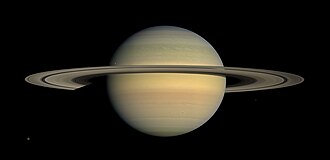

Exercício 5.1 Crie uma imagem com o atributo src apontando para o arquivo “imagem.jpg” e com um texto alternativo “Imagem de um gato”
Exercício 5.2 Crie uma imagem para o arquivo local “cachorro.jpg” com uma largura de 400 pixels e uma altura de 300 pixels
Exercício 5.3 Crie uma imagem com largura de 300 pixels contendo uma foto do planeta Saturno, sendo que essa foto deve estar em um endereço externo obtido via buscador.

Exercício 5.4 Crie uma imagem para o arquivo “logo.png” e com texto alternativo “Logotipo da empresa”, que seja um link para a página externa “https://exemplo.com”
Exercício 5.5 Crie um elemento com duas resoluções diferentes de imagens, uma para telas de até 720px de altura e outra para telas com altura maior que 720px. Use nomes de arquivos
fictícios